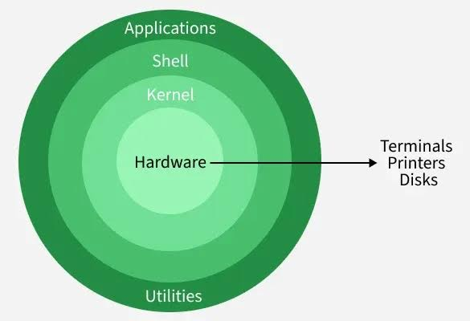

Linus Torvalds бол Linux үйлдлийн системийн цөмийг (Linux Kernel) бүтээгч Финландын программист юм. Тэрээр 1991 онд Linux төслийг эхлүүлсэн.

Linux-ийн албан ёсны бэлгэ тэмдэг нь Tux нэртэй оцон шувуу юм.
Linux нь Kernel, Shell, Applications зэрэг үндсэн хэсгүүдээс бүрддэг. Kernel нь программ болон компьютерийн төхөөрөмжүүдийн хооронд холболт үүсгэдэг.